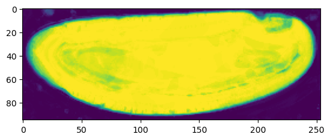
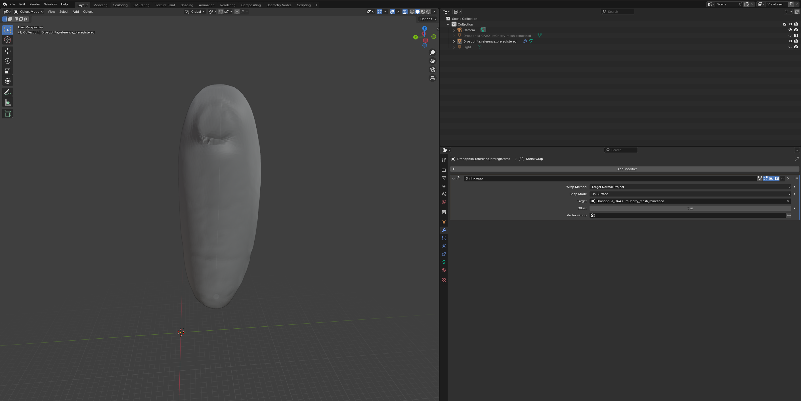
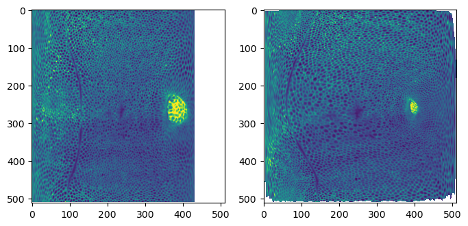
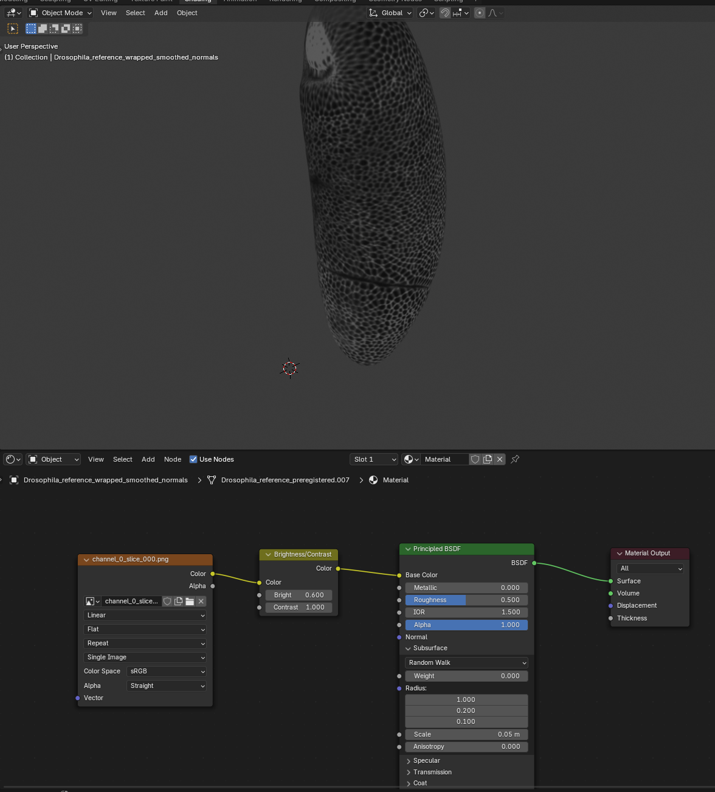

metadata_dict = {'filename': 'datasets/registration_example/Drosophila_CAAX-mCherry',
'resolution_in_microns': (1.05, 1.05, 1.05), # lightsheet data has isotropic resolution
'subsampling_factors': (1/2, 1/2, 1/2),
}Rigid-body registration
Find the rigid-body transformation that aligns two sets of points. Part of pipeline for multiple recordings.
Consistent cartographic projections across multiple recordings
In notebook 2 we saw how to do tissue cartography on a single volumetric image. But often, we have multiple images of very similarly shaped objects - either the successive frames of a movie or multiple recordings of biological structures with very consistent shapes, like the Drosophila egg. We want to use “the same” UV map/cartographic projection for all of the images - both so that we don’t need to redo the work of creating the UV map, and so that positions in our cartographic projections always correspond to the same anatomical position on the imaged object (e.g. the anterior side of the Drosophila embryo is always left, and the dorsal midline corresponds to the line \(v=1/2\) in UV space).
To do this, we use mesh registration. The idea is that we have a reference mesh - for example, from the first frame of a movie - on which a UV map is defined. We then move and deform this mesh so that it fits our target mesh - which describes the surface we want to extract from the volumetric data - as well as possible. The registered reference mesh now fits the volumetric data but still carries the UV map, and can now be used to create a cartographic projection.
If you have a consistently shaped object that you know you will image many times - in the Streichan lab, the early Drosophila embryo, of which we have hundreds of in toto recordings - it might make sense to make an idealized “prototypical” mesh with a nice mesh and UV map, that you can use as a reference.
Mesh/point cloud registration and deformation are very well-studied problems and we can make use of many robust and already-implemented algorithms. We proceed in two steps: 1. Affine registration: Align reference mesh to target mesh using translations, rotations, and possible rescaling, for instance by Iterative Closest Point. 2. Wrapping: Move each point on the registered reference mesh to the closest point on the surface defined by the target mesh.
Here we deal with step 1. You can also use the pymeshlab GUI.
For step 2, look at the wrapping module. You can also “wrap” interactively in blender, using the shrinkwrap modifier.
Loading the example dataset
We will use the same dataset - a Drosophila example - as in the Tutorial “Tissue cartography for a non-trivial topology”.
image = tcio.adjust_axis_order(tcio.imread(f"{metadata_dict['filename']}.tif"))
print("image shape:", image.shape) # image shape - spatial axes are in z-x-y orderimage shape: (1, 190, 509, 188)Load a 3d segmentation of embryo
# after creating an ilastik project, training the model, and exporting the probabilities, we load the segmentation
segmentation = tcio.read_h5(f"{metadata_dict['filename']}_subsampled-image_Probabilities.h5")
segmentation = segmentation[0] # Select the first channel of the segmentation - it's the probability a pixel
# is part of the sample
print("segmentation shape:", segmentation.shape)segmentation shape: (95, 254, 94)# look at the segmentation in a cross section
plt.imshow(segmentation[:,:,50], vmin=0, vmax=1)
Meshing
Using the marching cubes method.
# Now we create a 3d mesh using the marching cubes method
vertices, faces = tcremesh.marching_cubes(segmentation, 0.5, sigma_smoothing=0.5)
# EXTREMELY IMPORTANT - we now rescale the vertex coordinates so that they are in microns.
vertices_in_microns = vertices * (np.array(metadata_dict['resolution_in_microns'])
/np.array(metadata_dict['subsampling_factors']))mesh = tcmesh.ObjMesh(vertices_in_microns, faces)
mesh.name = "Drosophila_CAAX-mCherry_mesh_marching_cubes"
mesh.write_obj(f"{metadata_dict['filename']}_mesh_marching_cubes.obj")
# improve mesh quality using meshlab
ms = pymeshlab.MeshSet()
ms.load_new_mesh(f"{metadata_dict['filename']}_mesh_marching_cubes.obj")
ms.meshing_isotropic_explicit_remeshing()
ms.save_current_mesh(f"{metadata_dict['filename']}_mesh_remeshed.obj")Registration
In the data folder, we have the mesh we just created, Drosophila_CAAX-mCherry_mesh_remeshed.obj, as well as out reference mesh Drosophila_reference.obj - an idealized Drosophila embryo with a standardized UV mapping, corresponding to a cylindrical projection. You can look at both meshes in the blender file Drosophila_reference.blend (where I recentered the mesh from the image data - which you should not do if you want to use it for interpolation!).
Our goal will now be to register the reference mesh and the deformed mesh using an affine transformation. Affine transformations are generally written as 4d-matrices, with the extra dimension allowing to save the translation as part of the matrix.
Affine registration proceeds in two parts. First, we get an initial guess by matching the centroid and axes of inertia of the source and target mesh. Then we refine the registration using the iterative closest point algorithm. For all calculations, we make use of the KDTree data structure which allows efficient lookup of the closest point from a given point cloud to a query point.
align_by_centroid_and_intertia
align_by_centroid_and_intertia (source, target, q=0, scale=True, shear=False, n_samples=10000, choose_minimal_rotation=False)
*Align source point cloud to target point cloud using affine transformation.
Align by matching centroids and axes of inertia tensor. Since the inertia tensor is invariant under reflections along its principal axes, all 2^3 reflections are tried and (a) the one leading to the best agreement with the target or (b) the one corresponding to the least amount of rotation is chosen. This is controlled using the choose_minimal_rotation argument.*
| Type | Default | Details | |
|---|---|---|---|
| source | np.array of shape (n_source, 3) | Point cloud to be aligned. | |
| target | np.array of shape (n_target, 3) | Point cloud to align to. | |
| q | int | 0 | Quantile for outlier removal. Removes points with coordinates outside (qth, (1-1)qth) quantile from calculation of inertia tensor and centroid |
| scale | bool | True | Whether to allow scale transformation (True) or rotations only (False) |
| shear | bool | False | Whether to allow shear transformation (True) or rotations/scale only (False) |
| n_samples | int | 10000 | Number of samples of source to use when estimating distances. |
| choose_minimal_rotation | bool | False | Whether to chose the rotation matrix closest to the identity. If False, the rotation matrix (possibly with det=-1) leading to the best alignment with the target is chosen. |
| Returns | np.array, np.array | affine_matrix_rep : np.array of shape (4, 4) Affine transformation source -> target aligned : np.array of shape (n_source, 3) Aligned coordinates |
get_inertia
get_inertia (pts, q=0)
Get inertia tensor of 3d point cloud. q in [0, 1) removes points with outlier coordinates.
package_affine_transformation
package_affine_transformation (matrix, vector)
Package matrix transformation & translation into (d+1,d+1) matrix representation of affine transformation.
mesh_data = tcmesh.ObjMesh.read_obj(f"{metadata_dict['filename']}_mesh_remeshed.obj")
mesh_ref = tcmesh.ObjMesh.read_obj(f"datasets/registration_example/Drosophila_reference.obj")
# For illustration purposes, let's rotate and scale the reference mesh so it's off
random_rotation = stats.special_ortho_group.rvs(3)
mesh_ref.vertices = 1.1 * mesh_ref.vertices @ random_rotation
mesh_ref.normals = mesh_ref.normals @ random_rotationWarning: readOBJ() ignored non-comment line 4:
o embryo_rect# let's test this function
q = 0.0
trafo_centroid_intertia, vs_prealigned = align_by_centroid_and_intertia(mesh_ref.vertices,
mesh_data.vertices,
q=q, scale=True, shear=True,
choose_minimal_rotation=True)
data_centroid = stats.trim_mean(mesh_data.vertices, q, axis=0)
data_inertia = get_inertia(mesh_data.vertices, q=q)
data_eig = np.linalg.eigh(data_inertia)
ref_centroid = stats.trim_mean(mesh_ref.vertices, q, axis=0)
ref_inertia = get_inertia(mesh_ref.vertices, q=q)
ref_eig = np.linalg.eigh(ref_inertia)
prealigned_centroid = stats.trim_mean(vs_prealigned, q, axis=0)
prealigned_inertia = get_inertia(vs_prealigned, q=q)
prealigned_eig = np.linalg.eigh(prealigned_inertia)prealigned_eig.eigenvalues, data_eig.eigenvalues(array([ 3141.61049685, 3229.00962125, 19280.74388138]),
array([ 3141.61049685, 3229.00962125, 19280.74388138]))# we correctly matched the axes of intertia and the centroids
prealigned_eig.eigenvalues / data_eig.eigenvalues, np.linalg.norm(data_centroid - prealigned_centroid)(array([1., 1., 1.]), 1.3012829303080923e-12)prealigned_eig.eigenvectors, data_eig.eigenvectors(array([[-0.40234803, 0.91474904, -0.03674582],
[-0.03532074, 0.02459749, 0.99907328],
[ 0.91480518, 0.40327305, 0.02241286]]),
array([[-0.40234803, 0.91474904, -0.03674582],
[-0.03532074, 0.02459749, 0.99907328],
[ 0.91480518, 0.40327305, 0.02241286]]))# mean distance to closest target
tree = spatial.cKDTree(mesh_data.vertices)
np.mean(tree.query(mesh_ref.vertices)[0]), np.mean(tree.query(vs_prealigned)[0])(147.54268012467426, 6.674543338122944)_ = align_by_centroid_and_intertia(mesh_ref.vertices, mesh_data.vertices, q=q, scale=False)151 ms ± 15.1 ms per loop (mean ± std. dev. of 7 runs, 10 loops each)# We now save the pre-registered mesh. Note that we want to transform both our
# mesh coordinates and the corresponding normals, as well as potentially flip face orientation
mesh_registered = mesh_ref.apply_affine_to_mesh(trafo_centroid_intertia)
mesh_registered.name = "Drosophila_reference_preregistered"
mesh_registered.write_obj(f"datasets/registration_example/Drosophila_reference_preregistered.obj")for i in range(10):
if i % 2 == 0:
continue
print(i)1
3
5
7
9Iterative closest point algorithm
We can refine the initial registration with the ICP algorithm. This code is based on igl.procrustes and trimesh.registration.
procrustes
procrustes (source, target, include_scaling=True, include_reflections=True)
*Wrapper around igl.procrustes
Compute rotation+scaling+translation between two sets of points.*
| Type | Default | Details | |
|---|---|---|---|
| source | np.array of shape (n_points, n_dimensions) | ||
| target | np.array of shape (n_points, n_dimensions) | ||
| include_scaling | bool | True | |
| include_reflections | bool | True | |
| Returns | np.array, np.array, float | trafo_affine : np.array (4,4) array representing the affine transformation from source to target. aligned : np.array The orientation of the source that best fits the target. disparity : float np.linalg.norm(aligned-target, axis=1).mean() |
mesh_ref = tcmesh.ObjMesh.read_obj(f"datasets/registration_example/Drosophila_reference.obj")
source = np.copy(mesh_ref.vertices)
target = 1.3*mesh_ref.vertices@ stats.special_ortho_group.rvs(3) + np.array([12,12,1000])
trafo_affine, transformed, cost = procrustes(source, target)
trafo_affine, costWarning: readOBJ() ignored non-comment line 4:
o embryo_rect(array([[ -1.27176709, 0.2129668 , -0.16508667, 12. ],
[ 0.24407945, 1.24790943, -0.27045754, 12. ],
[ 0.11416518, -0.29557943, -1.26079305, 1000. ],
[ 0. , 0. , 0. , 1. ]]),
3.4643816882932517e-12)spatial.procrustes(source, target)(array([[-0.00002796, 0.00649897, -0.00003995],
[ 0.00026319, 0.00643907, -0.00003871],
[ 0.00042143, 0.00637917, -0.00003618],
...,
[ 0.000204 , -0.00637917, 0.00000789],
[ 0.0001068 , -0.00643907, 0.00000707],
[-0.00005934, -0.00649897, 0.00000636]]),
array([[-0.00002796, 0.00649897, -0.00003995],
[ 0.00026319, 0.00643907, -0.00003871],
[ 0.00042143, 0.00637917, -0.00003618],
...,
[ 0.000204 , -0.00637917, 0.00000789],
[ 0.0001068 , -0.00643907, 0.00000707],
[-0.00005934, -0.00649897, 0.00000636]]),
2.1869379044888485e-28)/opt/hostedtoolcache/Python/3.10.16/x64/lib/python3.10/site-packages/fastcore/docscrape.py:230: UserWarning: potentially wrong underline length...
Returns
---------- in
Apply the iterative closest point algorithm to align point cloud a with
point cloud b. Will only produce reasonable results if the...
else: warn(msg)icp
icp (source, target, initial=None, threshold=0.0001, max_iterations=20, include_scaling=True, n_samples=1000)
Apply the iterative closest point algorithm to align point cloud a with point cloud b. Will only produce reasonable results if the initial transformation is roughly correct. Initial transformation can be found by applying Procrustes’ analysis to a suitable set of landmark points (often picked manually), or by inertia+centroid-based alignment, implemented in align_by_centroid_and_intertia.
| Type | Default | Details | |
|---|---|---|---|
| source | (n,3) float | Source points in space. | |
| target | (m,3) float or Trimesh | Target points in space or mesh. | |
| initial | NoneType | None | Initial transformation. |
| threshold | float | 0.0001 | Stop when the change in cost is less than threshold |
| max_iterations | int | 20 | Maximum number of iterations |
| include_scaling | bool | True | Whether to allow dilations. If False, orthogonal Procrustes is used |
| n_samples | int | 1000 | If not None, n_samples sample points are randomly chosen from the source array for distance computation |
| Returns | np.array, np.array, float | matrix : (4,4) np.array The transformation matrix sending a to b transformed : (n,3) np.array The image of a under the transformation cost : float The cost of the transformation |
mesh_data = tcmesh.ObjMesh.read_obj(f"{metadata_dict['filename']}_mesh_remeshed.obj")
mesh_ref = tcmesh.ObjMesh.read_obj(f"datasets/registration_example/Drosophila_reference.obj")
# for illustration purposes, let's rotate and scale the reference mesh so it's off
mesh_ref = mesh_ref.apply_affine_to_mesh(1.1 * stats.special_ortho_group.rvs(3))Warning: readOBJ() ignored non-comment line 4:
o embryo_rectsource = np.copy(mesh_ref.vertices)
target = np.copy(mesh_data.vertices)
tree = spatial.cKDTree(target)np.mean(tree.query(source)[0])135.49963003678982trafo_initial, prealigned = align_by_centroid_and_intertia(source, target, q=0, scale=True, shear=True)trafo_initialarray([[ -0.06, -0.6 , 0.73, 91.62],
[ -0.47, -0.53, -0.47, 270.93],
[ -0.81, 0.49, 0.27, 93.89],
[ 0. , 0. , 0. , 1. ]])np.mean(tree.query(prealigned)[0])6.2561533646459395trafo_icp, icp_aligned, cost = icp(source, target, initial=trafo_initial, threshold=1e-4, max_iterations=50,
include_scaling=True, n_samples=1000)np.mean(tree.query(icp_aligned)[0])5.8583626546496586trafo_icparray([[ -0.05039776, -0.61739046, 0.73713584, 92.41686432],
[ -0.47081468, -0.54148091, -0.48110009, 263.05296811],
[ -0.82768076, 0.48507969, 0.28067945, 94.25355359],
[ 0. , 0. , 0. , 1. ]])Registration in MeshLab
You can also perform registration graphically in MeshLab - see this tutorial: https://www.youtube.com/watch?v=30bJcj6yA4c. Use this if you have problems with the automated method above.
Wrapping
Now that we have registered the mesh, we can wrap it! Let’s first do it using Blender with the shrinkwrap modifier. Go to the “layout” tab and click the “blue wrench” on the right to add a modifier. Search for shrinkwrap, select the target, and use “Tangent Normal Project” for best results:

If things look good, click “Apply” to make the modifier permanent and export the mesh as Drosophila_reference_wrapped.obj.
Procedural wrapping
Of course, we do not want to have to do this by hand for a movie with \(\sim100\) frames! In the wrapping module we will introduce tools to automate the wrapping process.
UV projection
To see how well all of this has worked, let’s use the wrapped mesh to generate UV projections. We will compare it with the automatic sphere unwrap on the original data mesh.
normal_offsets = np.array([-4, -2, 0, 2]) ##np.linspace(-5, 2, 8) # in microns
metadata_dict["normal_offsets"] = normal_offsets # add the info to the metadata
uv_grid_steps = 512tcio.save_dict_to_json(f"{metadata_dict['filename']}_metadata.json", metadata_dict)projected_data_wrapped, projected_coordinates_wrapped, projected_normals_wrapped = tcinterp.create_cartographic_projections(
image=f"{metadata_dict['filename']}.tif",
mesh=f"datasets/registration_example/Drosophila_reference_wrapped.obj",
resolution=metadata_dict["resolution_in_microns"],
normal_offsets=normal_offsets,
uv_grid_steps=uv_grid_steps)Warning: readOBJ() ignored non-comment line 4:
o Drosophila_reference_wrapped_smoothed_normals
/home/nikolas/Documents/UCSB/streichan/numerics/code/python code/jupyter notebooks/blender-tissue-cartography/blender_tissue_cartography/interpolation.py:215: RuntimeWarning: UV map has self-intersections, 111104 flipped triangles. Try use_fallback=True?
warnings.warn("UV map has self-intersections, {} flipped triangles. Try use_fallback=True?".format(projected_data, projected_coordinates, projected_normals = tcinterp.create_cartographic_projections(
image=f"{metadata_dict['filename']}.tif",
mesh="datasets/registration_example/Drosophila_CAAX-mCherry_mesh_remeshed_sphere_uv.obj",
resolution=metadata_dict["resolution_in_microns"],
normal_offsets=normal_offsets,
uv_grid_steps=uv_grid_steps)Warning: readOBJ() ignored non-comment line 4:
o Drosophila_CAAX-mCherry_mesh_remeshed
/home/nikolas/Documents/UCSB/streichan/numerics/code/python code/jupyter notebooks/blender-tissue-cartography/blender_tissue_cartography/interpolation.py:215: RuntimeWarning: UV map has self-intersections, 8 flipped triangles. Try use_fallback=True?
warnings.warn("UV map has self-intersections, {} flipped triangles. Try use_fallback=True?".format(fig, (ax1, ax2) = plt.subplots(figsize=(8,8), ncols=2)
ax1.imshow(projected_data_wrapped[0, 0], vmax=10000)
ax2.imshow(projected_data[0, 0][::-1,::-1].T, vmax=10000)
# save images for visualization in blender
texture_path = f"{os.getcwd()}/{metadata_dict['filename']}_textures"
tcio.save_stack_for_blender(projected_data_wrapped, texture_path, normalization=(0.01, 0.99))# save images as .tif stack for analysis
tcio.save_for_imageJ(f"{metadata_dict['filename']}_projected.tif", projected_data_wrapped, z_axis=1)
tcio.save_for_imageJ(f"{metadata_dict['filename']}_3d_coordinates.tif", projected_coordinates_wrapped)
tcio.save_for_imageJ(f"{metadata_dict['filename']}_normals.tif", projected_normals_wrapped)Let’s add a shader to check the texture looks good:
